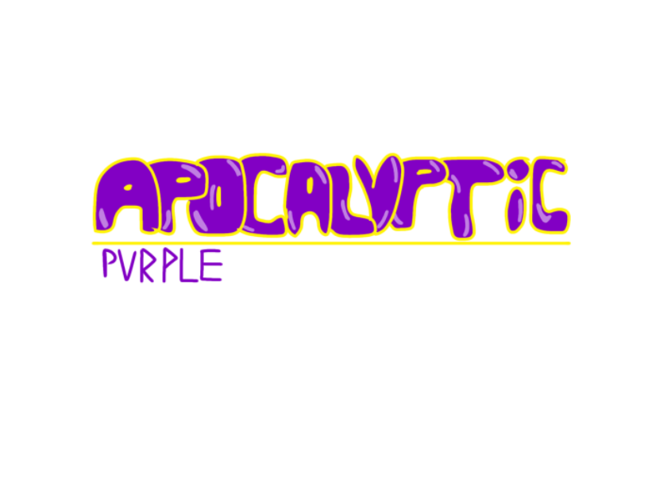

Type : Jeu vidéo, Jeu de rôle au tour par tour
Lors d'une invasion démoniaque, Famico, une jeune Furfur qui a été réveillée par
des intrus, se retrouve à devoir joeur les facteurs pour le compte d'une
Haut-placée morte sous ses yeux. Une titanesque aventure ainsi que de
nouvelles rencontres aussi bonnes que mauvaises.
La version actuelle est au Chapitre 3